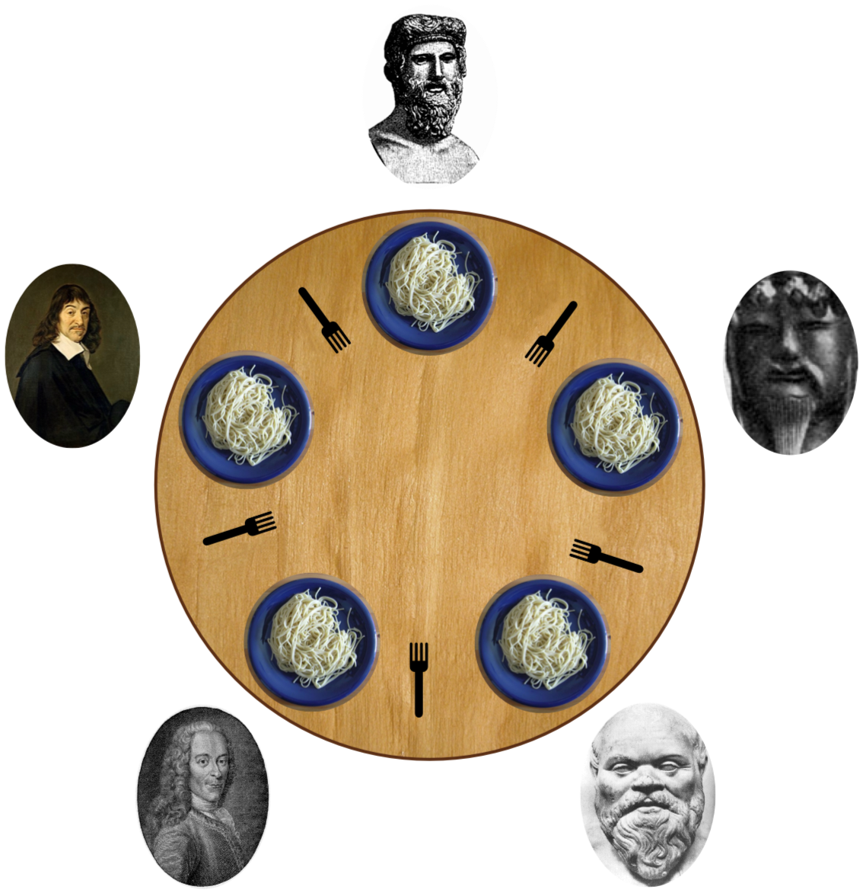

哲学家进餐问题是将一套资源分配给数个进程而产生的并发问题（concurrency problems）之一。Edsger Dijkstra是该问题的提出者，他在1971年做了一个关于五台电脑竞争五个共享的磁带驱动器的实验问题。这个计算机的问题由Tony Hoare转述而成了著名的哲学家进餐问题。
问题假设存在一定数目、生活只关于进食与思考的哲学家。他们环绕着坐在圆桌旁。每两个相邻的哲学家之间都放置了一把叉，而每个哲学家都需要同时占据他身旁的两把叉子才能进食。哲学家们一次只能拿起一把叉子，他们吃完饭后，会把两把叉子都归回原位并重新开始思考。注意，由于哲学家们共享叉子，他们是不可能在同一时间同时进食的。

该问题的一个解决方法是要求每一个哲学家都必须遵守一套规定的一个算法，他们遵守的这套规定使得：
下面给出一个能够让哲学家们陷入死锁问题的一个情况：假如哲学家们都饿的不行，紧接着他们在同一时刻都伸出了手拿起了他们左手边的叉子，这样他们就陷入了死锁状态，因为他们都在等待自己右手边的哲学家放下叉子以便自己进餐，于是这样就没有人会动了。
现在我们考虑考虑Lehmann与Rabin对该问题的随机的解决方案。它确保了整个系统不会陷入死锁的情况，比如：假如一个哲学家饿了，那么它最终会吃上东西的。
用三个哲学家构建的PRISM模型如下所示：
// 随机进餐的哲学家们 [LR81] // 三个哲学家 mdp // 公式 // 左叉可用 （左边坐着哲学家2） formula lfree = (p2>=0 & p2<=4) | p2=6 | p2=10; // 右叉可用 （左边坐着哲学家3） formula rfree = (p3>=0 & p3<=3) | p3=5 | p3=7 | p3=11; module phil1 p1: [0..11]; [] p1=0 -> (p1'=1); // 思考着思考着就会饿 [] p1=1 -> 0.5 : (p1'=2) + 0.5 : (p1'=3); // 随机抽取 [] p1=2 & lfree -> (p1'=4); // 拿起左叉 [] p1=3 & rfree -> (p1'=5); // 拿起右叉 [] p1=4 & rfree -> (p1'=8); // 拿起右叉（已拿起左叉） [] p1=4 & !rfree -> (p1'=6); // 右叉被占用（已拿起左叉） [] p1=5 & lfree -> (p1'=8); // 拿起左叉（已拿起右叉） [] p1=5 & !lfree -> (p1'=7); // 左叉被占用（已拿起右叉） [] p1=6 -> (p1'=1); // 放下左叉 [] p1=7 -> (p1'=1); // 放下右叉 [] p1=8 -> (p1'=9); // 开始次饭（拿到了两叉） [] p1=9 -> (p1'=10); // 吃完了，放下左叉 [] p1=9 -> (p1'=11); // 吃完了，放下右叉 [] p1=10 -> (p1'=0); // 放下右叉，回归思考 [] p1=11 -> (p1'=0); // 放下左叉，回归思考 endmodule // 通过重命名的方式构建其他的模块 module phil2 = phil1 [ p1=p2, p2=p3, p3=p1 ] endmodule module phil3 = phil1 [ p1=p3, p2=p1, p3=p2 ] endmodule // 标签 // 这位哲学家饿了 label "hungry" = ((p1>0)&(p1<8))|((p2>0)&(p2<8))|((p3>0)&(p3<8)); // 这位哲学家在次饭 label "eat" = ((p1>=8)&(p1<=9))|((p2>=8)&(p2<=9))|((p3>=8)&(p3<=9)); // 哲学家1饿了 label "hungry1" = (p1>0)&(p1<8); // 哲学家2饿了 label "hungry2" = (p2>0)&(p2<8); // 哲学家3饿了 label "hungry3" = (p3>0)&(p3<8); // 哲学家1在吃饭 label "eat1" = (p1>=8)&(p1<=9); // 哲学家2在吃饭 label "eat2" = (p2>=8)&(p2<=9); // 哲学家3在吃饭 label "eat3" = (p3>=8)&(p3<=9);
正如文件开头的关键词所示，该模型是一个马可夫决策过程。我们一共有三个模块，用来表示三位哲学家。
注意，哲学家吃晚饭以后（比如，哲学家1到了p1=9的状态），产生的关于先该放下哪把叉子的不定决策由启用两条指令的方式予以呈现（譬如，存在多条均以p1=9为guard的指令）。
同样要注意的是用PRISM公式（lfree以及rfree）来替换文件中重复使用的表达式的用法。在该模型中，这些公式被用来识别某位哲学家其左右相邻的哲学家是否拿起了这位哲学家的叉子。正如代码所示的那样，这要求我们在构建哲学家2和哲学家3的模块时需要对p1，p2以及p3进行重命名。重命名使得整个模型对应了哲学家2与哲学家3的他们左右相邻的哲学家也是不相同的实际情况。
每个哲学家执行的算法的基本步骤为：